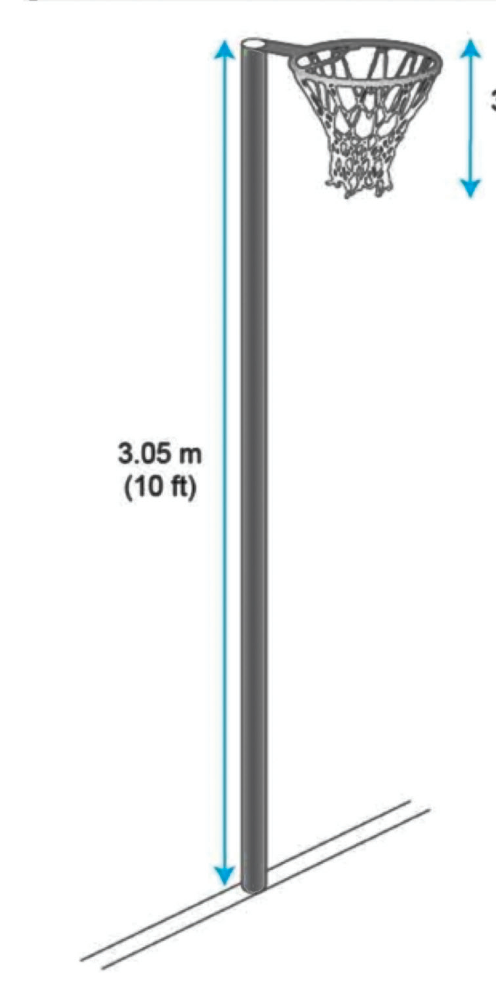
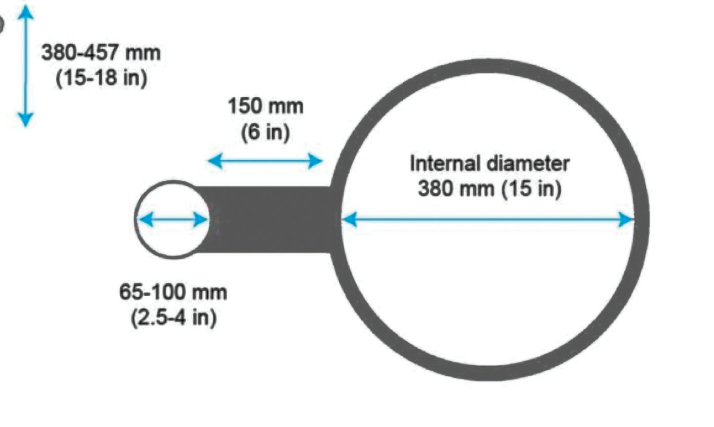
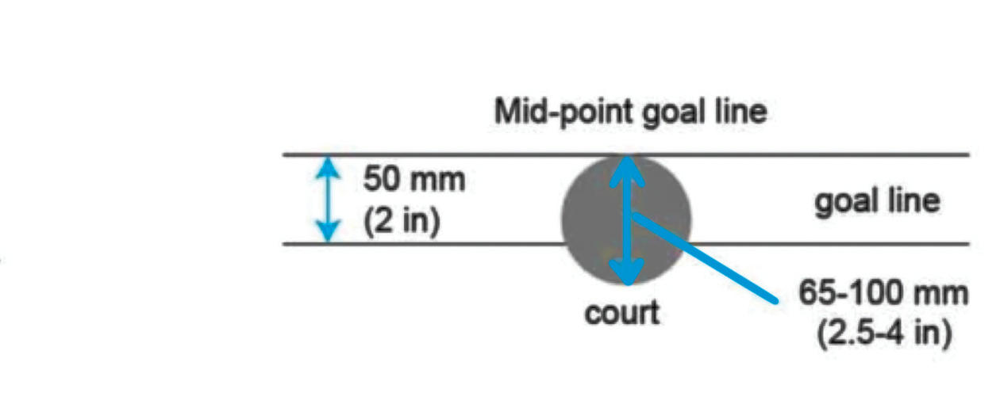

Activity 1.1
Survey a netball court at your school to identify all markings, and measure its playing area, then judge whether it is standard or not.
Netball goalposts
Netball goalposts are essential for scoring.
Each court has two goalposts, one at each end, positioned at the centre of the goal line within the goal circle.
The goalposts are between 65 mm to 100 mm in diameter and 3.05 m high, inserted into the ground and mounted with a ring at its upper end.
The ring is 15 mm thick and has a 150 mm length connection to the post.
The internal diameter of the ring is 380 mm fitted with a net.
The net is open at both ends measuring 380 mm to 457 mm in length, as shown in Figure 1.2.



A ball
The netball is spherical in shape, as shown in Figure 1.3 and made of leather, rubber or any other suitable synthetic material.
It measures 690 mm – 710 mm in circumference